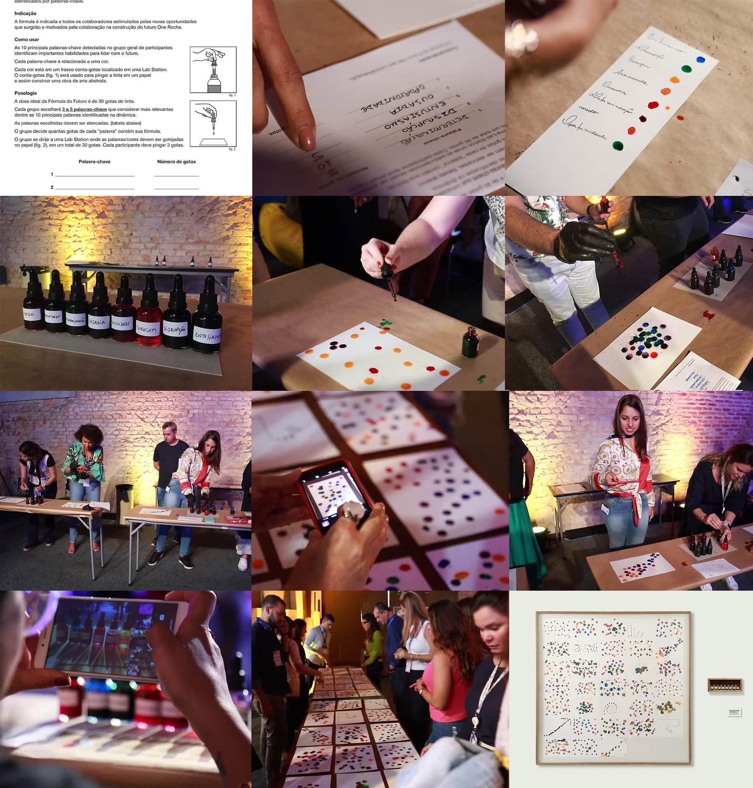

FÓRMULA DO FUTURO | ROCHE
O DESAFIO
Representar o profissional Roche mais preparado para o novo horizonte empresarial durante evento de integração e estratégia com 400 colaboradores.
A ATIVIDADE
Aplicar a “Fórmula do Futuro”, criada para resultar na execução coletiva de uma obra de arte a partir de gotas de tintas coloridas. Na atividade, os colaboradores identificam e projetam habilidades necessárias e as relacionam à cores. A partir daí, representam de maneira abstrata a dose certa de competências reconhecidas como ideais para o novo cenário profissional.

making of Fórmula do Futuro | Roche